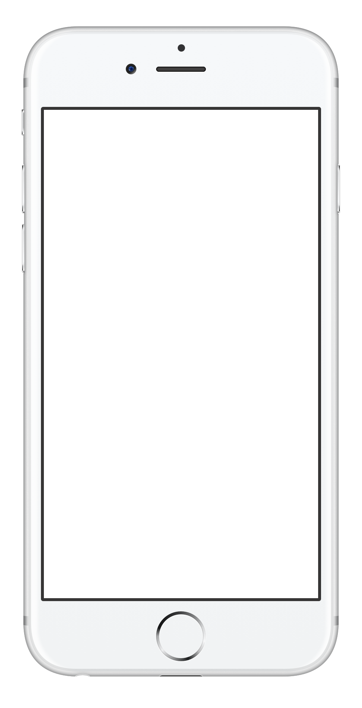
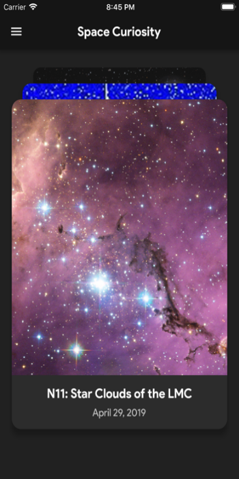
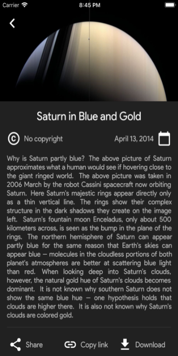
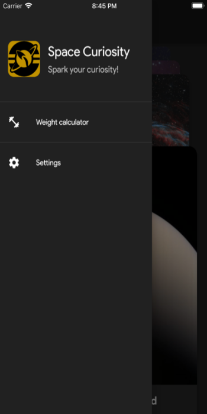
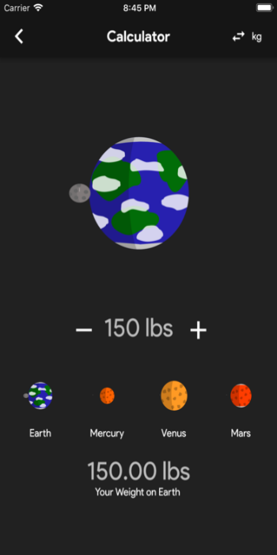
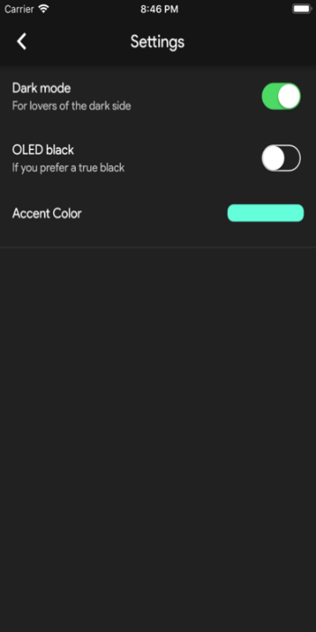

Space Curiosity
Life, the Universe and Everything
Features:
1.Daily NASA pictures: using the NASA APOD services.
2.Latest space news: be up-to-date with all space-related recent highlights.
3.ISS tracker: know exactly when and where the biggest floating space laboratory will be in each moment.
4.Weight calculator: have you ever wondered about how much would you weight in other worlds?

Space CuriosityContact Us